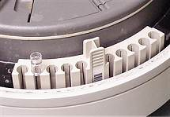
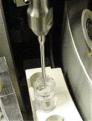
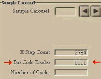
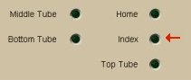

Adjusting and Aligning Sample Carousel
This procedure describes how to adjust and align the sample carousel.
- Aspirate (Pipettor Probe) position
- Bar Code Reader position
- Cup / Tube Detector position
- Open the instrument front cover and insert the interlock switch bypass key into the front cover interlock switch.
-
Align the sample carousel to the main pipettor at the aspirate position.
Caution: Ensure that the main pipettor probe is not bent or damaged before performing this alignment.
- In the Diagnostics Mechanics screen, select Sample Carousel.
- Home the sample carousel by selecting Home.
-
Load a sample tray onto the sample carousel, and then place an inverted 2-mL sample cup into sample position 2 on the tray.

- Select the Pipettor location, select Home to home the sample carousel again, and then select Move to Position.
- Remove the front cover interlock switch key. Manually move the pipettor over and downward until the probe is just above the pointed end of the sample cup. Reinsert the interlock switch key.
-
Use the left and right arrow keys to move the sample carousel so that the pointed end of the sample cup aligns with the probe tip.

- With the cup is centered on the probe, select Save Offset.
- Select Home > Move to Position. Recheck the alignment of the probe to the sample cup.
- Select Home to home the sample carousel, and then remove the sample rack.
- Press [Escape] to exit the Alignment screen.
- Select Save when prompted to save the alignments.
- Remove the interlock switch bypass key.
-
Align the sample carousel to the bar code reader position.
Note: Normally, the bar code reader alignment is performed only if a problem reading bar code labels is encountered or the bar code reader is replaced.
- In the Diagnostics Mechanics screen, select Sample Carousel.
- Select Home to home the sample carousel.
- Load a sample tray onto the carousel:
-
Select
Bar Code Reader > Move to Position.
Note:
- The newer camera style bar code reader lashes a red light occasionally. The light is wide spread and cannot be used to determine the alignment point. Use the window method in the steps that follow to determine the center of the alignment.
- The older laser style bar code readers exhibit a constant red light.
-
On the Alignment screen, observe the Bar Code Reader field for the Sample Tray ID number.
- If the Sample Tray ID number does not appear, then use the left and right arrow keys to step the sample carousel until the Sample Tray ID number appears. If the bar code reader has been replaced, then this can require 20 steps or more.
- If the bar code reader has been replaced, the bar code reader bracket may require bending to read the bar code labels. The bracket commonly must be bent upwards to angle the reader closer to the racks.

- Use the left arrow key to move the sample carousel counter-clockwise until the Sample Tray ID number disappears from the field or the index indicator light powers off.
-
Record the offset number displayed on the screen.
Note: Record the offset number when either the label ID number disappears or the index light powers off, whichever occurs first.

- Use the right arrow key to move the sample carousel clockwise until the Sample Tray ID number disappears from the field or the index indicator light powers off.
- Record the offset number displayed on the screen.
- Use the left arrow key to move the sample carousel to the center position between the clockwise and counter-clockwise offsets that were identified.
-
If an offset of four steps or less cannot be obtained, then note the direction of the offset, bend the bar code reader bracket, and repeat the bar code reader alignment to determine the new offset.
Note: If installing a new bar code reader, then the bracket commonly must be bent upwards to angle the reader closer to the racks.
- If the new offset is four steps or greater, then repeat the bending of the bracket. Remove the sample/reagent module from the instrument, if necessary.
- If bending the bracket does not work, then remove the sample/reagent module from the instrument.
- Move the sample carousel index sensor slightly left or right to remove the offset, and then tighten the sensor.
Note:
- If the index sensor is moved, then all the other sample carousel alignments must be redone.
- Move the sensor a distance approximately equivalent to the distance the carousel moves for the number of steps needing to be removed.
- Move the index sensor toward the Interface PCB to make the offset more positive or away from the interface PCB to make the offset more negative.
- Reinstall the module and attempt to align the bar code reader in software.
- If the index sensor is moved the full range, and the bar code reader offset is still greater than:
- -4 steps, then apply downward pressure to the top of the bracket away from the tube detector.
- +4 steps, then apply downward pressure to the top of the bracket toward the tube detector.
- Attempt to align the bar code reader again in software to within ±4 steps of the offset.
- When the alignment is correct, select Save Offset.
- Select Home to home the sample carousel, and then remove the sample tray.
- Press [Escape] to exit the Alignment screen.
- Select Save when prompted to save the alignments.
-
Align the sample carousel to the cup/tube detector position.
Note: Normally, the cup/tube detector alignment is performed only if a problem identifying cups or tubes is encountered.
- In the Diagnostics Mechanics screen, select Sample Carousel.
- Select Home to home the sample carousel.
-
Load a sample tray of the 1–99 series onto the carousel:
- Place a 13x75-mm tube in position 1
- Place a 13x100-mm tube in position 2
- Place a 2-mL sample cup in position 3
-
Select
Cup/Tube Reader > Move to Position.
Note:
- The 13x100-mm tube in tray position 2 should move to the cup/tube reader.
- All three tube indicator lights (green) on the user interface should be on.
- Use the arrow key to move the sample carousel counter-clockwise until the top tube indicator light or the index indicator lights go off. Record the offset number displayed on the screen.
- Use the arrow key to move the sample carousel clockwise until the top or middle tube indicator light or the index indicator lights go off. Record the offset number displayed.
- Use the arrow key to move the sample carousel to the center position between the clockwise and counter-clockwise limits that were identified. Select Save Offset.
- Select Home > Move to Position. Recheck the alignment and realign if necessary.
- Select Home to home the sample carousel, and then remove the sample tray.
- Press [Escape] to exit the Alignment screen.
- Select Save when prompted to save the alignments.
-
Verify system operation.
-
Perform the required system verification.
Note: Refer to the Verification of Preventive Maintenance document.
- Contact your local support organization with any questions or concerns.
-
Perform the required system verification.
- Ensure that the cover interlock bypass key is removed from the front cover interlock switch. Do not leave the key at customer site.